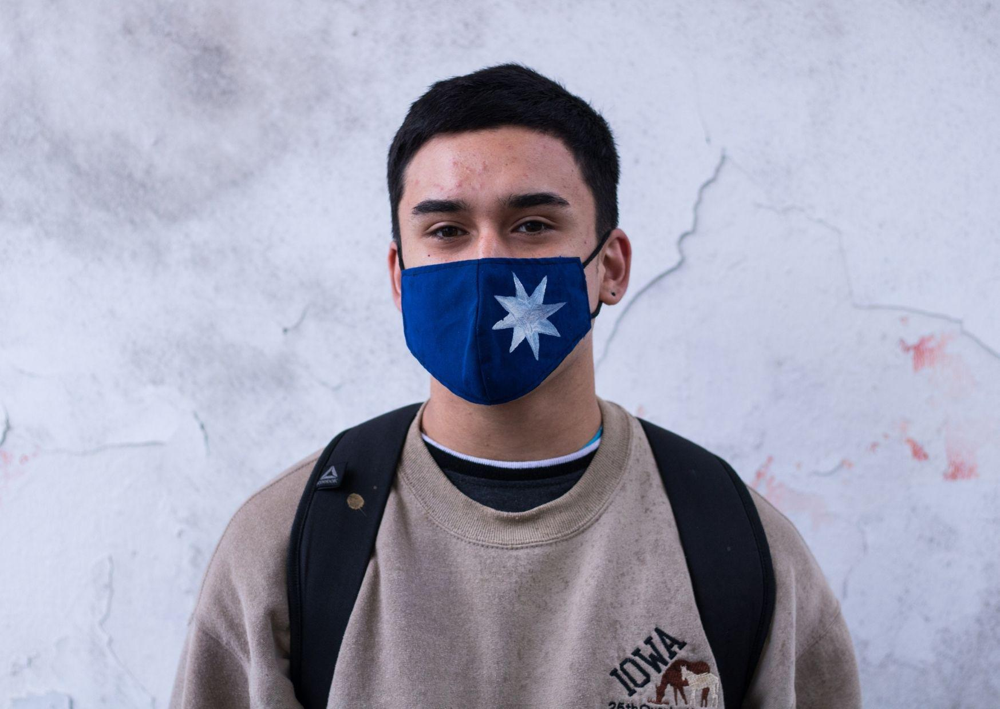
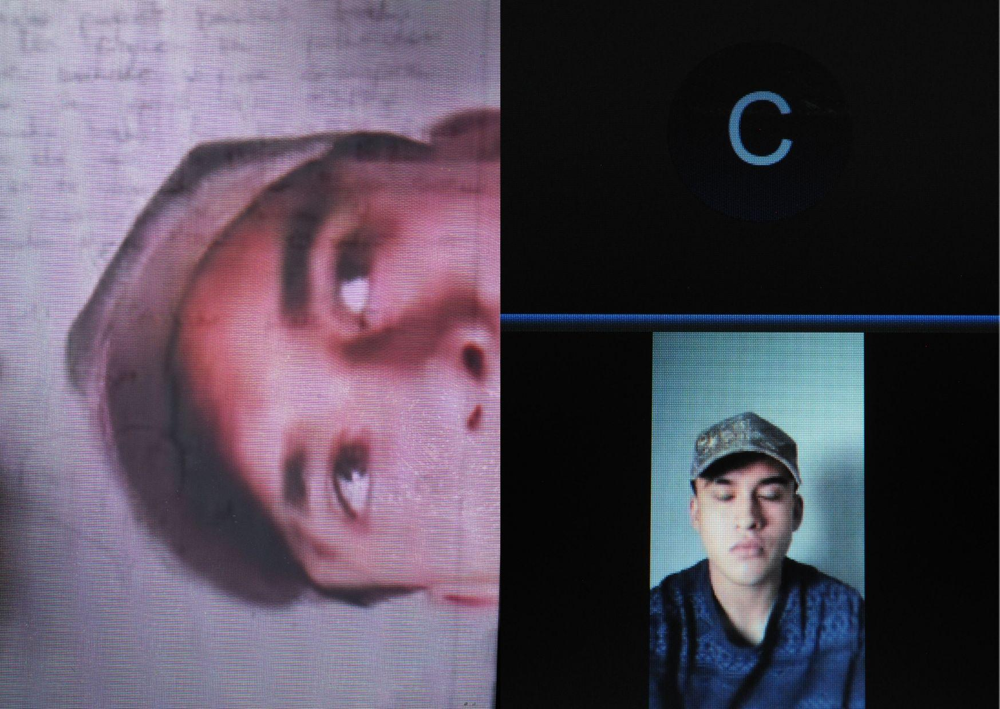
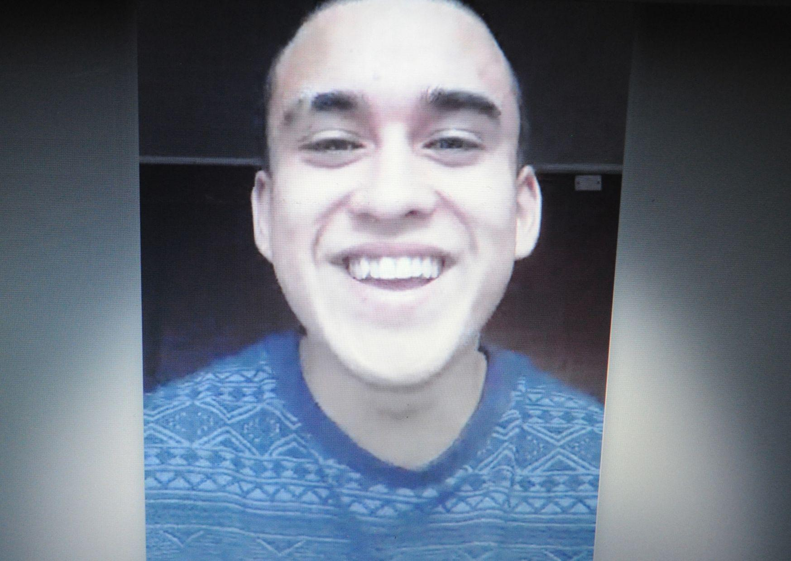
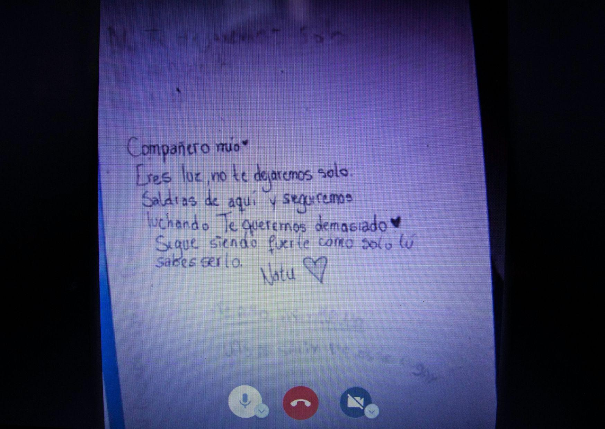

Por supuestos desórdenes públicos y agresión a una funcionaria de Carabineros, el estudiante secundario que participó de las manifestaciones en contra de la PSU, estuvo 20 días preso en el Centro de Detención Preventiva (CDP) de Castro en Chiloé. La violencia institucional no estuvo ausente en su caso.

A partir del 18 de Octubre del 2019 las movilizaciones a nivel nacional tomaron fuerza, Nicolás (19) participó de varias, pero recuerda principalmente la toma convocada por estudiantes, en la que paralizaron el acceso a las industrias salmoneras de Quellón por diez días.
Era de noche, Nicolás no recuerda el día exacto, pero sí lo que pasó: un ex militar manejaba “a lo loco” una camioneta blanca que lo atropelló junto a varias personas que estaban frente a la barricada. Mientras tanto, el copiloto disparaba con un rifle a postones. Ocho le llegaron a une de les manifestantes.
“Nosotros habíamos llamado a carabineros, les dijimos lo que estaba pasando y ellos nos dijeron que dejáramos de hueviar y que nos fuéramos a acostar” cuenta el joven.
La detención
El siete de enero un grupo de adherentes al movimiento #NomasPSU, se manifestaron frente a la gobernación provincial de Castro. Las ex Fuerzas Especiales (FFEE) de Carabineros llegaron. Comenzó un tira y afloja entre ellos y les manifestantes, las personas querían “ganar la calle” y lo lograron, lo que causó que los efectivos entraran con mayor violencia directamente a detener personas. Todes corrieron. Nicolás volvió, junto a otres, a alegar por el nivel de violencia en las detenciones.

Sin embargo, recién cuando Nicolás se encaminó a su casa lo tomaron detenido. Recuerda que lo tomaron por atrás, le tiraron al suelo y cuando sintió la presión de una rodilla en su espalda, le pusieron las esposas. Casi quedó sin respiración cuando uno de los funcionarios lo tomó para sentarlo junto a otres detenides. Esa noche la pasaron en el calabozo.
En la audiencia fue la primera vez en la que Nicolás escuchó los cargos de los que se le acusó: desórdenes públicos y maltrato de obra a carabinero con lesiones graves. “Era estúpido. O sea, una persona con dos dedos de frente sabe que es muy difícil que yo, un cabro de un metro 63, le pegue una patada a la altura del hombro a una carabinera con un traje especial, resistente, con casco y todo y le provoque lesiones así”, menciona.
Cuando sintió las esposas todo se volvió un poco más real. El gendarme que lo llevó al calabozo lo insultó en el camino y al llegar le ordena sacarse la ropa hasta quedar en puro boxer e inmediatamente vestirse por completo.
Durante el traslado, otro gendarme lleva su bolso con la cámara, lentes y su celular dentro. Al llegar al CDP de Castro, otro funcionario lo recibe, lo lanza al aire y lo patea cuando llega al suelo. Nicolás recuerda que él ordenó sacaran las cosas de ahí y yo “no sabía cómo reaccionar, ya estaba ahí en la cárcel, pasaba la gente al lado mío, me quedaban mirando”.
La rutina en la cárcel
Nicolás sabía que tenía que mantenerse alejado de los problemas. Hubo quienes le ayudaron y acompañaron. Le regalaron artículos como el champú y el cepillo de dientes para pasar los primeros días. Pronto comenzaron a llegar las cosas enviadas por quienes lo esperaban afuera.
Si bien los levantaban a las ocho de la mañana para desayunar media hora después, cada uno debía hacerse cargo de sus cosas como servirse y lavar. Cerca de las 10 de la mañana tocaba el almuerzo, servido en bandejas de metal. Nicolás recuerda que no era mala la comida, pero el pan de la hora de once, que se lo llevaban a las celdas, nunca le gustó. La cena era a las 15.30 hrs, por eso la guardaban en bolsas y se las ingeniaban para calentarla más tarde, para no pasar tanto tiempo sin comer.
Era muy fácil perder la noción del tiempo sin salidas al patio y sin ventanas en la celda, por lo que era muy complejo saber qué hora era. A veces se dormía a las seis de la tarde e incluso a las diez de la noche, pero en diez de la noche otras no conciliaba el sueño sino hasta que era muy entrada la madrugada.

El estar en prisión muchas veces conlleva un estigma del que es difícil desligarse, pero Nicolás dice: “Hubo entrevistas que me dejaron pésimo, pero a pesar de eso tuve apoyo de mucha gente y en general de toda la isla. En ese sentido tuve suerte, quizá de no haber sido por la presión social y la ayuda de organizaciones, todavía seguiría dentro cumpliendo prisión preventiva.”
- ¿Qué significa para ti ser un preso político de la revuelta social en Chile?
- Nunca me había planteado esa pregunta. No creo que signifique algo bueno. Quizás en el contexto de caer por luchar, pero justamente eso es lo más fome, que metan presa a la gente por estar luchando por un bien común. Sobre todo los montajes que hacen, a veces me pregunto si los carabineros son personas o no.
